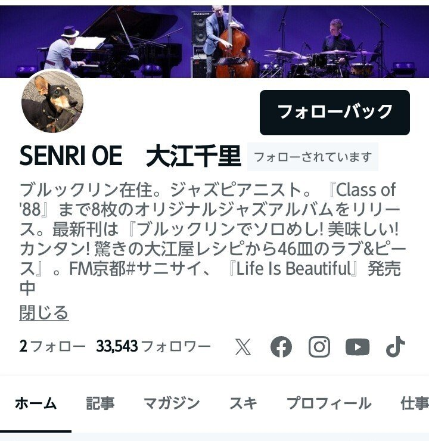

手放したはずの小さな夢が、今まさに叶おうとしている。叶えたいという気持ちすら忘れかけていたのに。こうしたすれ違いは時を越えて、代えがたい喜びを、何でもない日々を送る僕に届けてくれる。
「まだ覚えてくれていたんだ」
「眠った後、朝いつものように目が覚めてふと思い出したんだ。それだけのことだよ」
夢の中で尋ねると、今書いている物語の君はそう答える。君は二人を隔てるものなど何もないような、無邪気な笑みを浮かべている。
今年もあっという間に半分が終わろうとしている。来年は2027年。僕に書く喜びを教えてくれた日記をつけ始めて20年になる。そして、noteを始めて10年を迎える。
自分の書いた文章を誰かに認めてもらいたい。そんな気持ちはゼロじゃない。こうして文章を公開している以上、承認欲求がまったくないとは言えない。
書くことでしか人生の輪郭を掴めない。そんなことを無意識の海の底に沈めて、今もこうして息をしている。
あの時言われた忘れられない言葉も、ナイフのように尖った表現も、人知れず咲く花のような励ましも、僕は書くことでしか自分にとっての意味を掴めないのだと思う。まるで視力の悪い目に眼鏡をかけるように、書くことで視界がクリアになる。
でも、文章を書いている時、僕はその中にしか存在しないような気さえする。それは救いであると同時に、今この瞬間を生きていないような感覚すらあって、「いつまで夢見心地なんだ」と揶揄された言葉を思い出してしまう。
気の利いた返事ができなかった。感謝を素直に伝えられなかった。そんな、数え切れないほどの後悔がある。
でも、それを物語として誰かに届けたい。何より僕自身が忘れないために。何気ない人生のワンシーンとして済ませないために。喜びも悲しみも、これ以上ない幸せな時間も、二度と味わいたくない苦しさも、その全部が僕の人生にとって必要な出来事だったんだと思えるように。
書き手として、来年からどんな10年を歩いていこうか。
まずは初めての長編を完成させたい。この1年で経験したことがあふれ出して、プロットを作って入念に準備していた頃よりも自然に、不思議なほど書けている。
途中から、登場人物たちが勝手に動き出す感覚を、今書いている物語で初めて経験している。
想定していなかった場面が自然と立ち上がり、それぞれの人物に心が宿り、僕の知らない言葉を話し始める。もしかしたら、その先には予想だにしていない結末が待っているのかもしれない。
実際にあったことを真っ正面から書くのは恥ずかしいから、別の何かに置き換えてはいるけれど、その全部に僕の感情が乗っている。そして、それを誰かの心に届けたいと思う。
1年ほど前、大江千里さんが僕のnoteをフォローしてくださっていた。
『言の葉の庭』で「Rain」を知り、作品を彩るその楽曲に心を打たれた。梅雨の季節になると、体が自然にあの作品へと帰っていく。
フォローしてくださっていたのは数か月ほどだった。僕の文章を実際に読んでくださったかはわからない。もしかしたら、偶然目に留まっただけかもしれない。
それでも、これまで書いてきた言葉がほんの一瞬でも届いたかもしれない。長い人生の中で、一瞬のきらめきにすぎなかったとしても、書き続けてきた僕にとってはずっと大切にしたい出来事になった。

夜中に書き始めた文章を書き終えて、ベランダに出る。いつもは星なんて見えやしないのに、今夜はやけに空が綺麗だ。さっきまで降り続いていた雨はすっかり上がっている。雨上がりの匂いが鼻の先を掠めた。
雲の向こうにある星々。それを見られなくてもいい。見えていないものを見えたとは言わない。それでも、その光を夢想して、明日も何かしらの言葉を紡いでいきたい。ほんの一瞬でも、誰かの心に灯る言葉を書くこと。それが僕の変わらぬ夢の一つだ。